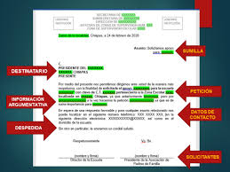

Una solicitud es un documento o formulario mediante el cual una persona realiza una petición formal. Este proceso permite registrar datos, razones y requisitos necesarios para atender la petición.
Una solicitud es, en esencia, una petición, tanto este sustantivo como su verbo, solicitar, tienen un carácter más formal, más serio, por lo cual no suelen utilizarse entre personas con un vínculo cercano o de afecto.

¿ COMO REDACTAR UNA SOLICITUD ?